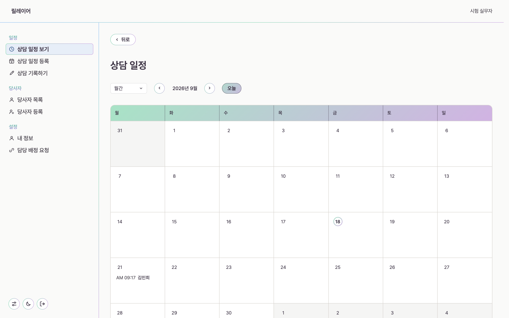
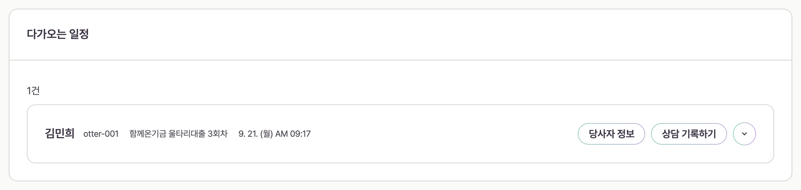
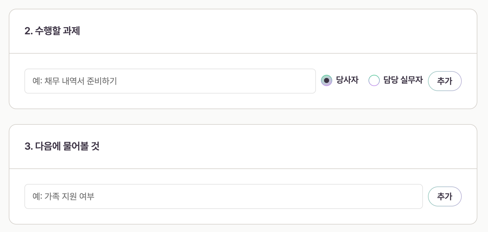
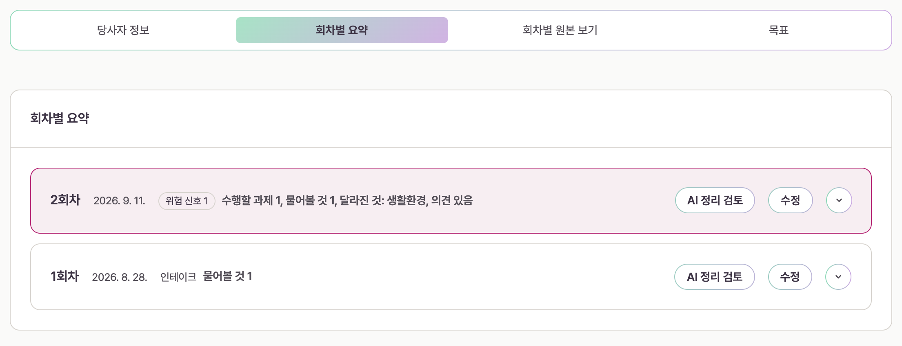

상담을 적어 두면
다음 회차가 준비됩니다
비영리 기관의 사례관리 기록을 한곳에 모읍니다. 이번 상담에서 남긴 과제와 다음에 하기로 한 일이 다음 회차 화면에 그대로 올라옵니다.
처음 쓰는 기관은 사용해 보기에서 관리자 계정을 만듭니다. 계정을 이미 받았다면 로그인, 아직 받지 못했다면 기관 관리자가 보내는 초대 링크가 필요합니다.

릴레이어가 하는 일
기록을 남기는 일과 다음 상담을 준비하는 일을 한 화면에서 잇습니다.
What Relayer does
-
달, 주, 하루 단위로 볼 수 있습니다. 다가오는 상담 카드에서 당사자 정보와 상담 기록으로 바로 들어갑니다.

일정 아래 다가오는 일정 카드. 이 줄에서 바로 기록으로 들어갑니다. -
이번 상담에서 다음에 하기로 한 일을 적으면 다음 회차 화면에 다시 뜹니다. 확인하지 못한 과제는 확인할 과제로 남아 있다가 상담을 종결할 때 한 번 더 보입니다.

적어 둔 과제와 물어볼 것이 다음 회차 화면으로 넘어갑니다. -
손으로 적은 기록과 녹음 전사문을 회차별로 나눠 둡니다. 전체 상담 목표가 언제 어떻게 바뀌었는지도 같은 화면에서 봅니다.

회차별 요약. 탭으로 원본과 목표로 오갑니다.
LLM 위키로 기록을 잇습니다 준비 중
회차마다 흩어진 기록을 서로 가리키게 만들어 다음 상담에서 같은 것을 다시 찾지 않게 합니다. 이 기능은 아직 만들고 있고, 아래 다섯 칸으로 나눠 적는 방식은 지금 화면에 있습니다.
Backlinks, structure, memory
백링크
같은 사람, 같은 과제, 같은 영역이 서로를 가리킵니다. 한 문장을 열면 그 이야기가 어느 회차에서 왔는지 거꾸로 따라갈 수 있습니다.
구조화
자유롭게 적은 글을 정해진 칸으로 나눕니다. 한 덩어리 요약을 만들지 않습니다. 칸이 정해져 있어야 다음 회차가 그 칸을 찾아 읽습니다.
기억
지난 회차에서 남긴 과제와 물어볼 것, 목표가 다음 회차 화면으로 올라옵니다. 사람이 옮겨 적지 않습니다.
회차별 요약에 들어가는 다섯 가지
-
오늘 상담 내용 그날 나눈 이야기입니다. 일시와 상담 방식, 대면이면 장소가 이 칸에 함께 붙습니다.
-
수행할 과제 누가 할지 고릅니다. 당사자이거나 담당 실무자입니다. 다음 회차의 확인할 과제로 올라갑니다.
-
다음에 물어볼 것 다음 회차의 오늘 물어볼 것으로 올라갑니다. 확인하기 전까지 계속 남습니다.
-
실무자 의견 판단은 사람이 적습니다. 이 칸은 AI가 채우지 않습니다.
-
다음 상담 목표 다음 회차가 오늘 상담 목표로 이어받습니다. 바꾸면 언제 무엇이 바뀌었는지 남습니다.
회차 목록의 한 줄은 이 다섯 칸에서 나옵니다. 수행할 과제 건수, 물어볼 것 건수, 달라진 영역, 의견 유무를 쉼표로 잇고 빈 것은 뺍니다. 새 문장을 지어내지 않습니다.
첫 상담까지 세 단계
순서를 건너뛸 수는 없습니다. 앞 단계를 마치면 다음 화면이 열립니다.
Three steps to the first session
-
당사자를 등록합니다 이름과 연락처를 넣고 개인 정보 및 민감 정보 처리 동의를 받습니다.
-
상담 일정을 등록합니다 날짜와 시간, 상담 방법을 정합니다. 만나서 하는 상담이면 장소도 함께 적습니다.
-
상담을 기록합니다 그 자리에서 적거나 녹음을 올립니다. 저장하면 다음 회차 준비가 끝납니다.
어디로 들어가면 되나요
릴레이어는 기관 안에서 쓰는 도구입니다. 자기 자리를 골라 주세요.
Which door is yours
가이드
화면을 그대로 따라가며 읽는 두 장입니다.
Two guides, screen by screen